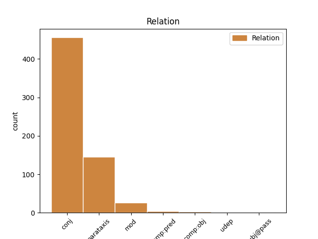
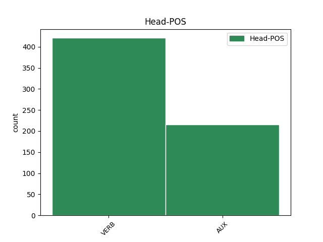
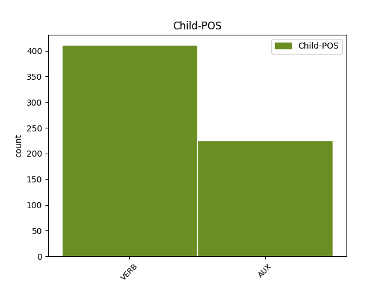

Distribution of features within this leaf



Agreement Rules sorted by frequency.
- When the dependent token is the conjunct(conj) of the head token,
1 Hij _ _ _ _ 0 _ _ _
2 is zijn AUX WW|pv|tgw|ev Number=Sing|Tense=Pres|VerbForm=Fin 0 _ _ _
3 een _ _ _ _ 0 _ _ _
4 persoon _ _ _ _ 0 _ _ _
5 zonder _ _ _ _ 0 _ _ _
6 geweten _ _ _ _ 0 _ _ _
7 en _ _ _ _ 0 _ _ _
8 probeert proberen VERB WW|pv|tgw|met-t Number=Sing|Tense=Pres|VerbForm=Fin 2 conj _ _
9 Suske _ _ _ _ 0 _ _ _
10 en _ _ _ _ 0 _ _ _
11 Wiske _ _ _ _ 0 _ _ _
12 vaak _ _ _ _ 0 _ _ _
13 dwars _ _ _ _ 0 _ _ _
14 te _ _ _ _ 0 _ _ _
15 zitten _ _ _ _ 0 _ _ _
16 . _ _ _ _ 0 _ _ _
1 Het _ _ _ _ 0 _ _ _
2 enige _ _ _ _ 0 _ _ _
3 familieverband _ _ _ _ 0 _ _ _
4 tussen _ _ _ _ 0 _ _ _
5 de _ _ _ _ 0 _ _ _
6 personages _ _ _ _ 0 _ _ _
7 is zijn AUX WW|pv|tgw|ev Number=Sing|Tense=Pres|VerbForm=Fin 0 _ _ _
8 de _ _ _ _ 0 _ _ _
9 relatie _ _ _ _ 0 _ _ _
10 tussen _ _ _ _ 0 _ _ _
11 Wiske _ _ _ _ 0 _ _ _
12 en _ _ _ _ 0 _ _ _
13 tante _ _ _ _ 0 _ _ _
14 Sidonia _ _ _ _ 0 _ _ _
15 : _ _ _ _ 0 _ _ _
16 Tante _ _ _ _ 0 _ _ _
17 Sidonia _ _ _ _ 0 _ _ _
18 is zijn AUX WW|pv|tgw|ev Number=Sing|Tense=Pres|VerbForm=Fin 7 parataxis _ _
19 écht _ _ _ _ 0 _ _ _
20 de _ _ _ _ 0 _ _ _
21 tante _ _ _ _ 0 _ _ _
22 van _ _ _ _ 0 _ _ _
23 Wiske _ _ _ _ 0 _ _ _
24 . _ _ _ _ 0 _ _ _
1 Zo _ _ _ _ 0 _ _ _
2 is _ _ _ _ 0 _ _ _
3 seks _ _ _ _ 0 _ _ _
4 taboe _ _ _ _ 0 _ _ _
5 , _ _ _ _ 0 _ _ _
6 mogen _ _ _ _ 0 _ _ _
7 er _ _ _ _ 0 _ _ _
8 geen _ _ _ _ 0 _ _ _
9 hoofdpersonen _ _ _ _ 0 _ _ _
10 bijkomen _ _ _ _ 0 _ _ _
11 of _ _ _ _ 0 _ _ _
12 afvallen _ _ _ _ 0 _ _ _
13 , _ _ _ _ 0 _ _ _
14 mogen _ _ _ _ 0 _ _ _
15 de _ _ _ _ 0 _ _ _
16 hoofdpersonen _ _ _ _ 0 _ _ _
17 niet _ _ _ _ 0 _ _ _
18 veranderen _ _ _ _ 0 _ _ _
19 of _ _ _ _ 0 _ _ _
20 verouderen _ _ _ _ 0 _ _ _
21 , _ _ _ _ 0 _ _ _
22 en _ _ _ _ 0 _ _ _
23 mag mogen AUX WW|pv|tgw|ev Number=Sing|Tense=Pres|VerbForm=Fin 0 _ _ _
24 een _ _ _ _ 0 _ _ _
25 aantal _ _ _ _ 0 _ _ _
26 gegeven _ _ _ _ 0 _ _ _
27 situaties _ _ _ _ 0 _ _ _
28 niet _ _ _ _ 0 _ _ _
29 veranderen _ _ _ _ 0 _ _ _
30 ( _ _ _ _ 0 _ _ _
31 bijvoorbeeld _ _ _ _ 0 _ _ _
32 een _ _ _ _ 0 _ _ _
33 huwelijk _ _ _ _ 0 _ _ _
34 tussen _ _ _ _ 0 _ _ _
35 Sidonia _ _ _ _ 0 _ _ _
36 en _ _ _ _ 0 _ _ _
37 Lambik _ _ _ _ 0 _ _ _
38 zal zullen AUX WW|pv|tgw|ev Number=Sing|Tense=Pres|VerbForm=Fin 23 mod _ _
39 nooit _ _ _ _ 0 _ _ _
40 plaatsvinden _ _ _ _ 0 _ _ _
41 ) _ _ _ _ 0 _ _ _
42 . _ _ _ _ 0 _ _ _
1 De _ _ _ _ 0 _ _ _
2 rang _ _ _ _ 0 _ _ _
3 voor _ _ _ _ 0 _ _ _
4 de _ _ _ _ 0 _ _ _
5 troonopvolging _ _ _ _ 0 _ _ _
6 is zijn AUX WW|pv|tgw|ev Number=Sing|Tense=Pres|VerbForm=Fin 0 _ _ _
7 op _ _ _ _ 0 _ _ _
8 heden _ _ _ _ 0 _ _ _
9 als _ _ _ _ 0 _ _ _
10 volgt volgen VERB WW|pv|tgw|met-t Number=Sing|Tense=Pres|VerbForm=Fin 6 comp:pred _ SpaceAfter=No
11 : _ _ _ _ 0 _ _ _
1 Maar _ _ _ _ 0 _ _ _
2 ook _ _ _ _ 0 _ _ _
3 : _ _ _ _ 0 _ _ _
4 " _ _ _ _ 0 _ _ _
5 Ik _ _ _ _ 0 _ _ _
6 alleen _ _ _ _ 0 _ _ _
7 weet weten VERB WW|pv|tgw|ev Number=Sing|Tense=Pres|VerbForm=Fin 0 _ _ _
8 waar _ _ _ _ 0 _ _ _
9 het _ _ _ _ 0 _ _ _
10 paneel _ _ _ _ 0 _ _ _
11 van _ _ _ _ 0 _ _ _
12 het _ _ _ _ 0 _ _ _
13 Lam _ _ _ _ 0 _ _ _
14 Gods _ _ _ _ 0 _ _ _
15 zich _ _ _ _ 0 _ _ _
16 bevindt bevinden VERB WW|pv|tgw|met-t Number=Sing|Tense=Pres|VerbForm=Fin 7 comp:obj _ SpaceAfter=No
17 . _ _ _ _ 0 _ _ _
1 In _ _ _ _ 0 _ _ _
2 de _ _ _ _ 0 _ _ _
3 media _ _ _ _ 0 _ _ _
4 draaide draaien VERB WW|pv|verl|ev Number=Sing|Tense=Past|VerbForm=Fin 0 _ _ _
5 deze _ _ _ _ 0 _ _ _
6 verkiezingen _ _ _ _ 0 _ _ _
7 vooral _ _ _ _ 0 _ _ _
8 rond _ _ _ _ 0 _ _ _
9 wie _ _ _ _ 0 _ _ _
10 de _ _ _ _ 0 _ _ _
11 grootste _ _ _ _ 0 _ _ _
12 partij _ _ _ _ 0 _ _ _
13 zou zullen AUX WW|pv|verl|ev Number=Sing|Tense=Past|VerbForm=Fin 4 udep _ _
14 worden _ _ _ _ 0 _ _ _
15 en _ _ _ _ 0 _ _ _
16 dus _ _ _ _ 0 _ _ _
17 de _ _ _ _ 0 _ _ _
18 eerste _ _ _ _ 0 _ _ _
19 minister _ _ _ _ 0 _ _ _
20 zou _ _ _ _ 0 _ _ _
21 mogen _ _ _ _ 0 _ _ _
22 leveren _ _ _ _ 0 _ _ _
23 . _ _ _ _ 0 _ _ _
Disagree Examples:
1 Het _ _ _ _ 0 _ _ _
2 Hof _ _ _ _ 0 _ _ _
3 van _ _ _ _ 0 _ _ _
4 Savoye _ _ _ _ 0 _ _ _
5 is zijn AUX WW|pv|tgw|ev Number=Sing|Tense=Pres|VerbForm=Fin 0 _ _ _
6 nu _ _ _ _ 0 _ _ _
7 het _ _ _ _ 0 _ _ _
8 gerechtshof _ _ _ _ 0 _ _ _
9 van _ _ _ _ 0 _ _ _
10 Mechelen _ _ _ _ 0 _ _ _
11 , _ _ _ _ 0 _ _ _
12 maar _ _ _ _ 0 _ _ _
13 was zijn AUX WW|pv|verl|ev Number=Sing|Tense=Past|VerbForm=Fin 5 conj _ _
14 vroeger _ _ _ _ 0 _ _ _
15 de _ _ _ _ 0 _ _ _
16 residentie _ _ _ _ 0 _ _ _
17 van _ _ _ _ 0 _ _ _
18 Margaretha _ _ _ _ 0 _ _ _
19 van _ _ _ _ 0 _ _ _
20 Oostenrijk _ _ _ _ 0 _ _ _
21 . _ _ _ _ 0 _ _ _
1 Bij _ _ _ _ 0 _ _ _
2 de _ _ _ _ 0 _ _ _
3 Eerste _ _ _ _ 0 _ _ _
4 Kamer-verkiezingen _ _ _ _ 0 _ _ _
5 van _ _ _ _ 0 _ _ _
6 2003 _ _ _ _ 0 _ _ _
7 werd worden AUX WW|pv|verl|ev Number=Sing|Tense=Past|VerbForm=Fin 0 _ _ _
8 Hendrik _ _ _ _ 0 _ _ _
9 ten _ _ _ _ 0 _ _ _
10 Hoeve _ _ _ _ 0 _ _ _
11 verkozen _ _ _ _ 0 _ _ _
12 als _ _ _ _ 0 _ _ _
13 Eerste _ _ _ _ 0 _ _ _
14 Kamerlid _ _ _ _ 0 _ _ _
15 namens _ _ _ _ 0 _ _ _
16 de _ _ _ _ 0 _ _ _
17 OSF _ _ _ _ 0 _ _ _
18 , _ _ _ _ 0 _ _ _
19 hij _ _ _ _ 0 _ _ _
20 is zijn AUX WW|pv|tgw|ev Number=Sing|Tense=Pres|VerbForm=Fin 7 parataxis _ _
21 eerder _ _ _ _ 0 _ _ _
22 lid _ _ _ _ 0 _ _ _
23 geweest _ _ _ _ 0 _ _ _
24 van _ _ _ _ 0 _ _ _
25 de _ _ _ _ 0 _ _ _
26 Provinciale _ _ _ _ 0 _ _ _
27 Staten _ _ _ _ 0 _ _ _
28 van _ _ _ _ 0 _ _ _
29 Friesland _ _ _ _ 0 _ _ _
30 namens _ _ _ _ 0 _ _ _
31 de _ _ _ _ 0 _ _ _
32 Fryske _ _ _ _ 0 _ _ _
33 Nasjonale _ _ _ _ 0 _ _ _
34 Partij _ _ _ _ 0 _ _ _
35 ( _ _ _ _ 0 _ _ _
36 FNP _ _ _ _ 0 _ _ _
37 ) _ _ _ _ 0 _ _ _
38 . _ _ _ _ 0 _ _ _
1 Vanaf _ _ _ _ 0 _ _ _
2 de _ _ _ _ 0 _ _ _
3 jaren _ _ _ _ 0 _ _ _
4 zestig _ _ _ _ 0 _ _ _
5 zijn zijn AUX WW|pv|tgw|mv Number=Plur|Tense=Pres|VerbForm=Fin 0 _ _ _
6 veel _ _ _ _ 0 _ _ _
7 van _ _ _ _ 0 _ _ _
8 die _ _ _ _ 0 _ _ _
9 kasseien _ _ _ _ 0 _ _ _
10 weer _ _ _ _ 0 _ _ _
11 verdwenen _ _ _ _ 0 _ _ _
12 onder _ _ _ _ 0 _ _ _
13 een _ _ _ _ 0 _ _ _
14 laag _ _ _ _ 0 _ _ _
15 asfalt _ _ _ _ 0 _ _ _
16 , _ _ _ _ 0 _ _ _
17 maar _ _ _ _ 0 _ _ _
18 ze _ _ _ _ 0 _ _ _
19 hadden hebben AUX WW|pv|verl|mv Number=Plur|Tense=Past|VerbForm=Fin 5 conj _ _
20 inmiddels _ _ _ _ 0 _ _ _
21 zo'n _ _ _ _ 0 _ _ _
22 eigen _ _ _ _ 0 _ _ _
23 karakter _ _ _ _ 0 _ _ _
24 aan _ _ _ _ 0 _ _ _
25 Parijs-Roubaix _ _ _ _ 0 _ _ _
26 gegeven _ _ _ _ 0 _ _ _
27 , _ _ _ _ 0 _ _ _
28 dat _ _ _ _ 0 _ _ _
29 de _ _ _ _ 0 _ _ _
30 organisatie _ _ _ _ 0 _ _ _
31 haar _ _ _ _ 0 _ _ _
32 best _ _ _ _ 0 _ _ _
33 doet _ _ _ _ 0 _ _ _
34 in _ _ _ _ 0 _ _ _
35 de _ _ _ _ 0 _ _ _
36 omgeving _ _ _ _ 0 _ _ _
37 originele _ _ _ _ 0 _ _ _
38 kasseistroken _ _ _ _ 0 _ _ _
39 te _ _ _ _ 0 _ _ _
40 vinden _ _ _ _ 0 _ _ _
41 en _ _ _ _ 0 _ _ _
42 ze _ _ _ _ 0 _ _ _
43 zo _ _ _ _ 0 _ _ _
44 mogelijk _ _ _ _ 0 _ _ _
45 als _ _ _ _ 0 _ _ _
46 erfgoed _ _ _ _ 0 _ _ _
47 te _ _ _ _ 0 _ _ _
48 laten _ _ _ _ 0 _ _ _
49 beschermen _ _ _ _ 0 _ _ _
50 . _ _ _ _ 0 _ _ _
1 Renners _ _ _ _ 0 _ _ _
2 die _ _ _ _ 0 _ _ _
3 beide _ _ _ _ 0 _ _ _
4 kasseiklassiekers _ _ _ _ 0 _ _ _
5 op _ _ _ _ 0 _ _ _
6 één _ _ _ _ 0 _ _ _
7 jaar _ _ _ _ 0 _ _ _
8 tijd _ _ _ _ 0 _ _ _
9 wonnen winnen VERB WW|pv|verl|mv Number=Plur|Tense=Past|VerbForm=Fin 0 _ _ _
10 en _ _ _ _ 0 _ _ _
11 daarmee _ _ _ _ 0 _ _ _
12 eeuwige _ _ _ _ 0 _ _ _
13 roem _ _ _ _ 0 _ _ _
14 genieten genieten VERB WW|pv|tgw|mv Number=Plur|Tense=Pres|VerbForm=Fin 9 conj _ SpaceAfter=No
15 : _ _ _ _ 0 _ _ _
1 De _ _ _ _ 0 _ _ _
2 textielfabrikanten _ _ _ _ 0 _ _ _
3 Theo _ _ _ _ 0 _ _ _
4 Vienne _ _ _ _ 0 _ _ _
5 en _ _ _ _ 0 _ _ _
6 Maurice _ _ _ _ 0 _ _ _
7 Perez _ _ _ _ 0 _ _ _
8 organiseerden organiseren VERB WW|pv|verl|mv Number=Plur|Tense=Past|VerbForm=Fin 0 _ _ _
9 deze _ _ _ _ 0 _ _ _
10 grote _ _ _ _ 0 _ _ _
11 klassieker _ _ _ _ 0 _ _ _
12 van _ _ _ _ 0 _ _ _
13 de _ _ _ _ 0 _ _ _
14 wielersport _ _ _ _ 0 _ _ _
15 voor _ _ _ _ 0 _ _ _
16 het _ _ _ _ 0 _ _ _
17 eerst _ _ _ _ 0 _ _ _
18 in _ _ _ _ 0 _ _ _
19 1896 _ _ _ _ 0 _ _ _
20 en _ _ _ _ 0 _ _ _
21 met _ _ _ _ 0 _ _ _
22 uitzondering _ _ _ _ 0 _ _ _
23 van _ _ _ _ 0 _ _ _
24 de _ _ _ _ 0 _ _ _
25 beide _ _ _ _ 0 _ _ _
26 wereldoorlogen _ _ _ _ 0 _ _ _
27 is zijn AUX WW|pv|tgw|ev Number=Sing|Tense=Pres|VerbForm=Fin 8 conj _ _
28 de _ _ _ _ 0 _ _ _
29 wedstrijd _ _ _ _ 0 _ _ _
30 sindsdien _ _ _ _ 0 _ _ _
31 elk _ _ _ _ 0 _ _ _
32 jaar _ _ _ _ 0 _ _ _
33 verreden _ _ _ _ 0 _ _ _
34 . _ _ _ _ 0 _ _ _